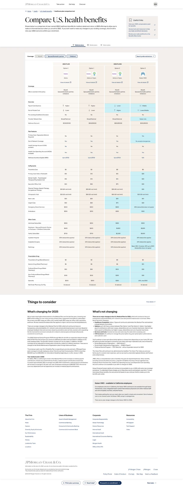
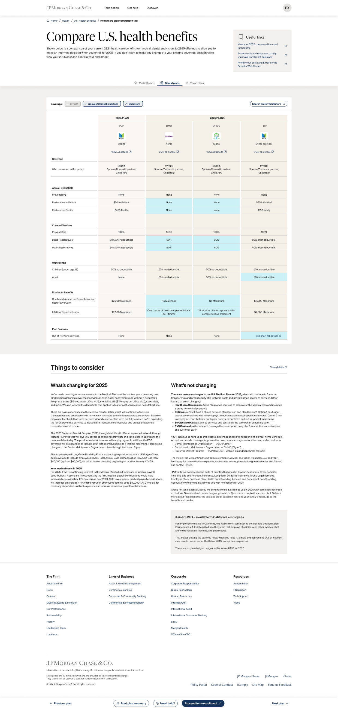
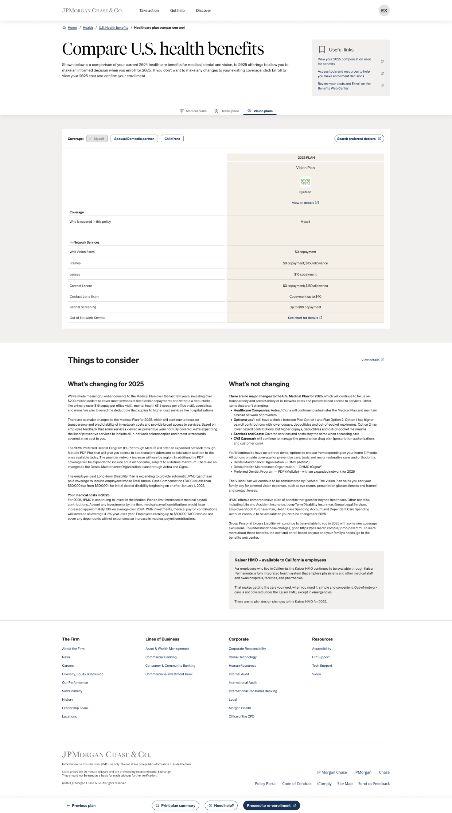

Case study / US healthcare benefits
Employees needed a simpler, more confident way to review and choose healthcare cover.
Simplifying a fragmented enrolment experience so employees could understand their options and choose cover that suited their needs and circumstances.




The idea
The legacy US healthcare enrolment experience was fragmented, lengthy and difficult to navigate: 12 pages and 29 steps. Employees had to cross-reference multiple PDFs and vendor websites to understand their options and determine the best fit for themselves and their families.
With potentially thousands of variations in coverage and plan options, the process created considerable uncertainty. Many employees simply renewed their existing plan, driving avoidable help tickets and support requests.
The opportunity
Most of the firm’s US employees renewed their health benefits each year without reviewing whether their cover still met their family’s needs. The existing experience combined well-intentioned but confusing internal resources with journeys out to external vendor platforms, creating unnecessary friction at a significant decision point.
Through employee surveys, focus groups and interviews, I found that the process was widely perceived as stressful and confusing. The opportunity was to simplify enrolment, help employees make more informed choices, and reduce avoidable support demand.
My role
My team and I benchmarked the legacy experience with employees, using an Ease, Efficiency and Satisfaction framework to establish the scale and nature of the problem. We then developed several concepts and tested mid-fidelity interactive prototypes through rapid, iterative research.
Working closely with senior Benefits leaders, I helped identify the strongest solution that could be delivered within a tight deadline. I designed an experience that enabled employees to quickly understand their healthcare options and select cover that suited their needs and circumstances.
The product transformation
We transformed a fragmented benefits ecosystem into a single, employee-centred product:
- Consolidated 40 fragmented experiences into one elegant portal
- Reduced plan enrolment clicks from 29 to two
- Employees can see the health, dental and vision plans they are enrolled in
- They can see the changes that are coming in for the new enrolment period
- They can compare coverage level and vendors in an easy table
Impact
The redesigned experience demonstrated strong adoption and helped employees make more informed decisions:
Leadership takeaway: This was not simply a streamlined enrolment journey; it was the transformation of a fragmented benefits ecosystem into a single, employee-centred product. I combined employee evidence, rapid prototyping and close partnership with senior Benefits leaders to make a complex, high-stakes decision easier to understand and act on.
The result consolidated 40 disconnected experiences into one portal and reduced a 29-step journey to two clicks. More importantly, it gave employees the confidence to actively review their benefits rather than passively renewing them, while establishing a more scalable foundation for future enrolment periods.